Hb Elektroforez (Bio-Rad D-10) sonuçlarının kabulü, eşleştirilmesi, uzman onayı ve raporlanması
Kılavuzdaki görüntülerde yer alan hastalar (TEST …) ve barkodlar (9999…) örnektir; gerçek kişilere ait değildir.
Uygulamada iki bilgi kaynağı vardır: laboratuvarın girdiği kabul kaydı (hasta bilgileri) ve D-10 cihazından gelen sonuç. Bu ikisi aynı barkodla buluşunca numune uzman onayına düşer.
Kabul kaydı sonuçtan önce de açılabilir, sonra da. İki yol da aynı yere çıkar:
Numune gelince Numune kabul ekranında kaydedilir. Sonuç cihazdan gelince barkoddan tanınır ve kendiliğinden eşleşir.
Kaydı olmayan sonuç İş listesinde bekler. Yeni kabul aç ile hasta bilgileri girilir, sonuç hemen bağlanır.
Barkod hatalı girilmişse sonuç, Eşleştir ile doğru kabule elle ve gerekçe yazılarak bağlanır.
Laboratuvara gelen tüpün kaydedildiği ekrandır. Üst menüden Numune kabul ile açılır.
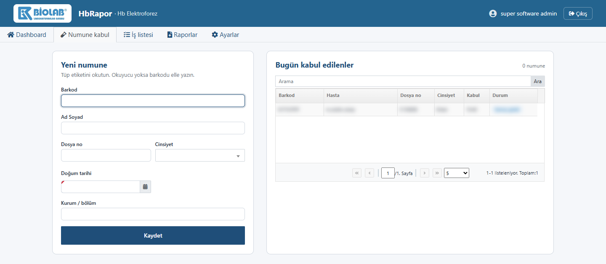
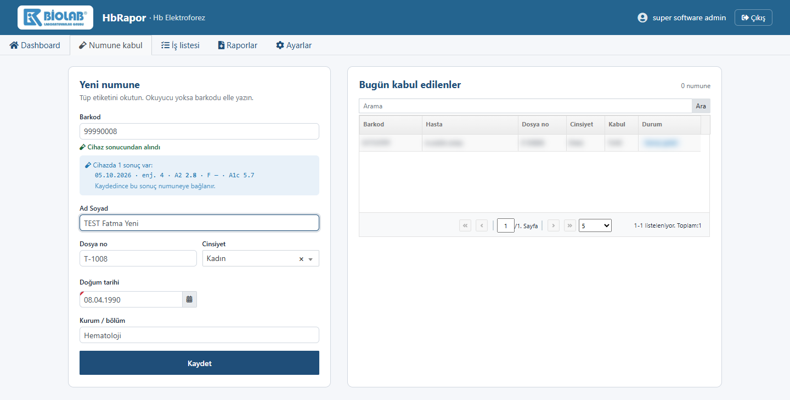
| Düğme / alan | Ne işe yarar |
|---|---|
| Kaydet | Kabulü oluşturur. Barkodun cihaz sonucu varsa hemen bağlar. |
| Bugün kabul edilenler | Gün içinde kaydedilen numuneler. Satıra tıklayınca bilgiler forma gelir; düzeltme yapılabilir. |
| Arama | Listede barkod, ad soyad veya dosya no ile arar. |
| Reddet | Listeden seçilen numune uygun değilse (pıhtılı, yetersiz vb.) Red nedeni seçilerek reddedilir. Yalnız henüz onaylanmamış numunelerde görünür. |
Uzmanın günlük çalışma ekranıdır. Üst menüden İş listesi ile açılır.
| Öğe | Ne işe yarar |
|---|---|
| Tarih aralığı | Listede hangi günlerin görüneceğini belirler. Açılışta son 7 gündür. |
| Cihazdan şimdi çek | D-10'dan seçili tarih aralığındaki sonuçları hemen alır. Ekran açıkken sistem birkaç dakikada bir kendisi de çeker. |
| Yeşil bant | Cihaz bağlantısının durumu, son çekme saati ve kaç yeni sonuç geldiği. Bağlantı yoksa kırmızıya döner. |
Ekran açıldığında bu sıradaki ilk dolu sekme seçili gelir. Sekme adının yanındaki sayı, o sekmedeki kayıt sayısıdır.
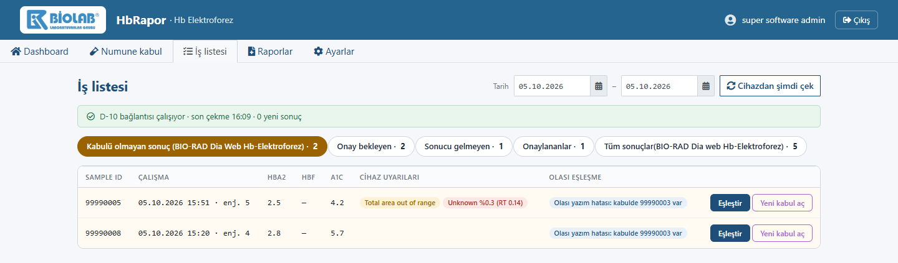
Her satırda iki düğme vardır: Eşleştir (var olan bir kabule bağla) ve Yeni kabul aç (hasta bilgilerini girerek kabul oluştur). Ayrıntı için 4. bölüme bakın.
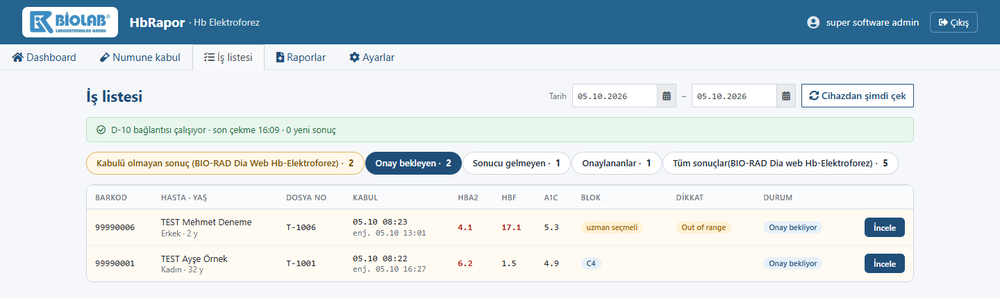
| Sütun | Anlamı |
|---|---|
| HbA2 / HbF | Referans dışı değerler kırmızı yazılır. |
| Blok | Sistemin önerdiği yorum bloğu (ör. C4). uzman seçmeli yazıyorsa sistem blok öneremedi; uzman seçer. |
| Dikkat | Cihaz uyarısı (Out of range), anormal pik (Unknown %…), birden fazla çalışma (2 çalışma) gibi işaretler. |
| İncele | Rapor inceleme ekranını açar (5. bölüm). |
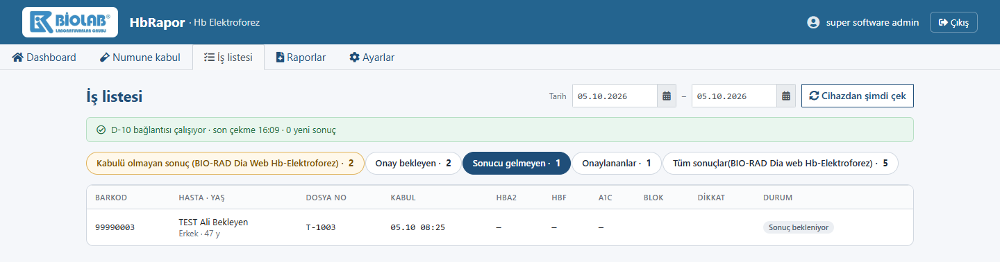
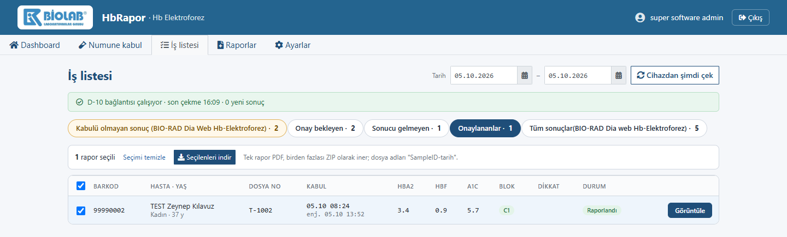
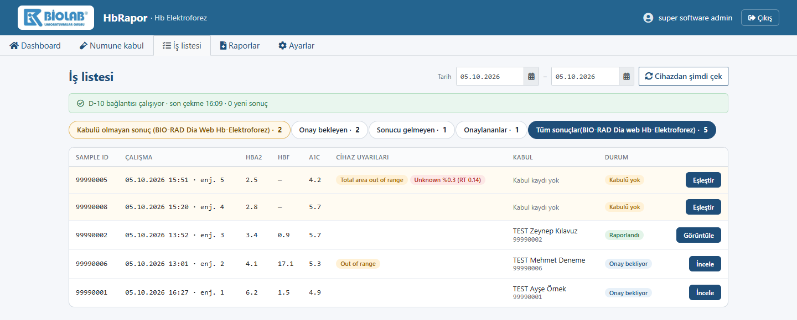
Bu sekme, çalışmaları çalışma tarihine göre listeler. Kabul sütununda hasta adı ya da "Kabul kaydı yok", Durum sütununda numunenin bulunduğu aşama yazar. Bir sonuç başka sekmede görünmüyorsa önce buraya bakın.
Cihaza ya da kabule barkod yanlış girilmişse sonuç kendiliğinden eşleşmez.
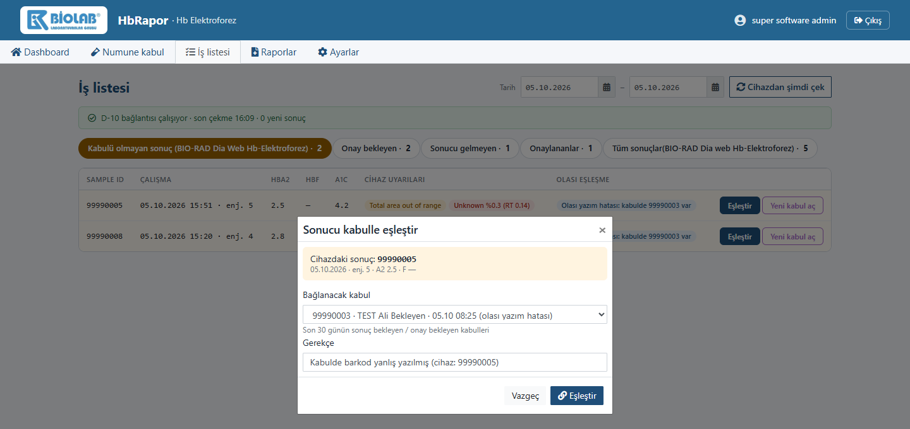
Elle eşleştirilen sonuçlar listelerde "elle" etiketiyle görünür ve inceleme ekranında uzmana ayrıca bildirilir. Eşleştirmeden önce hasta ve barkodun gerçekten aynı numuneye ait olduğundan emin olun.
İş listesinde İncele'ye basınca açılır. Üstte hasta bilgileri, solda cihaz çalışmaları ve kromatogram, sağda sonuç, uyarılar ve yorum bulunur.
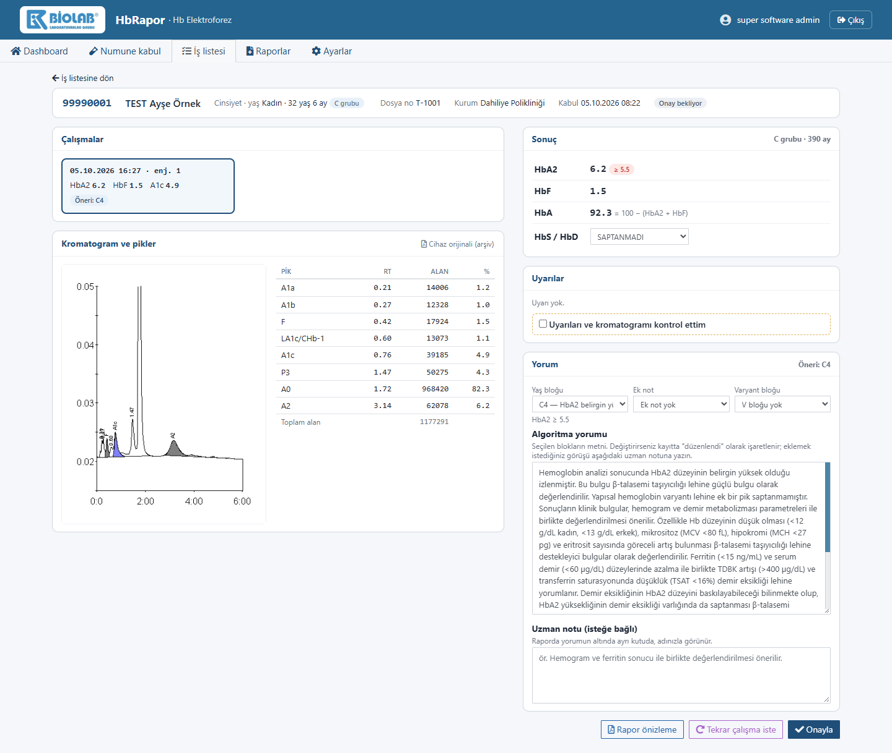
| Bölüm | Ne gösterir / ne yapılır |
|---|---|
| Çalışmalar | Numunenin cihazdaki her çalışması. Birden fazlaysa raporlanacak olan tıklanarak seçilir. |
| Kromatogram ve pikler | Cihazın grafiği ve pik tablosu. Cihaz orijinali (arşiv) D-10'un kendi PDF'ini açar; rapora eklenmez. |
| Sonuç | HbA2, HbF, hesaplanan HbA ve HbS / HbD seçimi. Yaş grubu (A / B / C) sağ üstte yazar. |
| Uyarılar | Kurallardan çıkan uyarılar. Onaydan önce "Uyarıları ve kromatogramı kontrol ettim" işaretlenir. |
| Yaş / Ek not / Varyant bloğu | Rapor yorumunun hazır metinleri. Sistem önerir, uzman değiştirebilir. |
| Algoritma yorumu | Seçilen blokların metni. Değiştirilirse kayıtta "düzenlendi" olarak işaretlenir. |
| Uzman notu | Raporda yorumun altında ayrı kutuda, uzmanın adıyla çıkan ek görüş. İsteğe bağlıdır. |
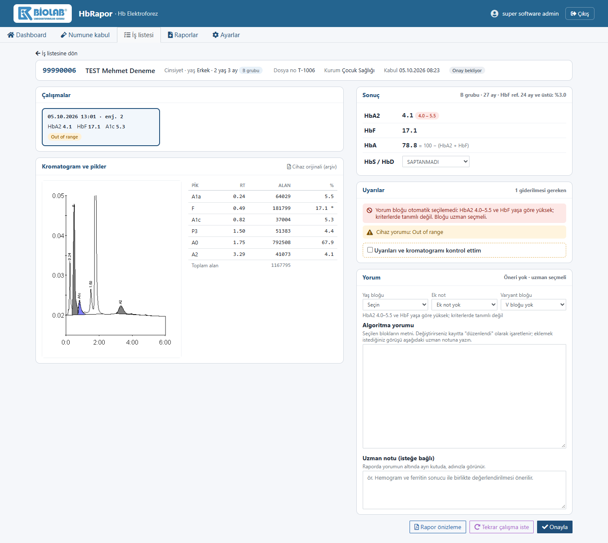
Kırmızı uyarılar giderilmeden rapor onaylanamaz. Anormal pik %5 ve üzerindeyse HbA değerini sistem hesaplamaz, uzman girer; HbS/HbD alanında "DOĞRULAMA GEREKLİ" yazar.
| Düğme | Ne işe yarar |
|---|---|
| Rapor önizleme | Raporun PDF'ini TASLAK damgasıyla gösterir. Onaydan önce kontrol için. |
| Tekrar çalışma iste | Sonuç şüpheliyse numuneyi gerekçeyle yeniden çalışmaya gönderir (aşağıdaki görüntü). |
| Onayla | Raporu kesinleştirir. PDF oluşturulup arşivlenir; numune Onaylananlar'a geçer. |
| Taslağı bloklardan yenile | Yorum metninde yaptığınız değişiklikleri silip blokların orijinal metnine döner. |
| İş listesine dön | Kaydetmeden listeye döner. |
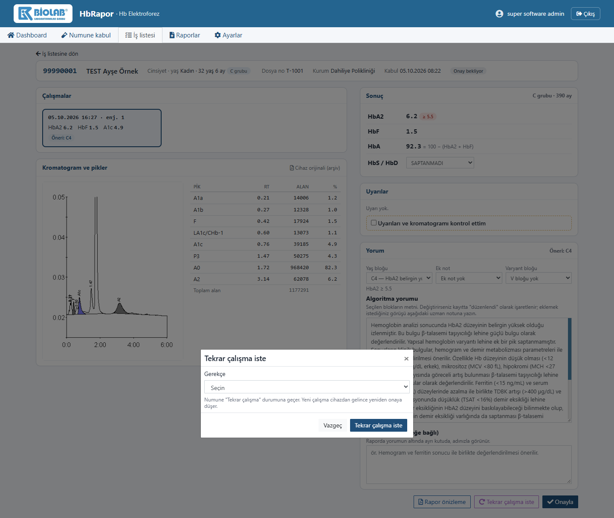
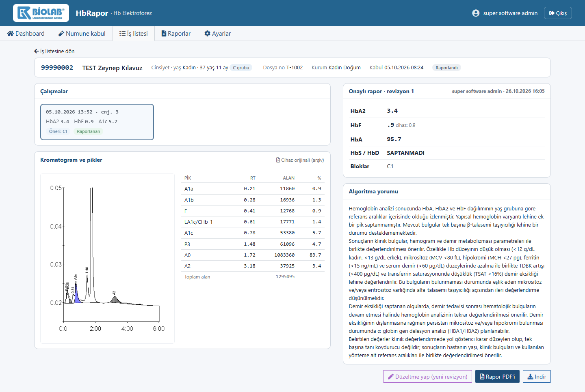
| Düğme | Ne işe yarar |
|---|---|
| Rapor PDF'i | Arşivdeki raporu açar. |
| İndir | Raporu bilgisayara indirir. |
| Düzeltme yap (yeni revizyon) | Raporda hata varsa Düzeltme gerekçesi yazılarak yeni sürüm açılır. Kaydedince rapor R2, R3… olarak yeniden çıkar; eski sürüm silinmez. |
Onaylanmış raporların arşividir. Üst menüden Raporlar ile açılır.
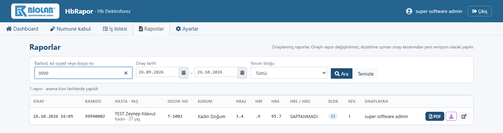
| Öğe | Ne işe yarar |
|---|---|
| Arama kutusu | Barkod, ad soyad veya dosya no. Arama kutusu doluysa tüm tarihlerde arar. |
| Onay tarihi / Yorum bloğu | Listeyi tarih aralığına veya bloğa göre daraltır. |
| Ara / Temizle | Aramayı çalıştırır / filtreleri sıfırlar. |
| Raporu yeni sekmede açar. | |
| İndir (mor) | Raporu barkod-tarih.pdf adıyla indirir. |
| Aç (ok simgesi) | Raporun inceleme ekranını açar; revizyon geçmişi ve düzeltme oradan yapılır. |
| Rev. | Revizyon numarası. 1'den büyükse rapor düzeltilmiştir; önceki sürümler saklanır. |
| Durum | Yapılacak |
|---|---|
| Numune geldi, sonuç henüz yok | Numune kabul → barkodu okut → bilgileri gir → Kaydet |
| Sonuç geldi, kabul kaydı yok | İş listesi → Kabulü olmayan sonuç → Yeni kabul aç |
| Barkod uyuşmuyor | Kabulü olmayan sonuç → Eşleştir (doğru kabulü seç, gerekçe yaz) |
| Sonuç geldi, kabul kaydı var | Bir şey yapmayın; otomatik Onay bekleyen'e geçer |
| Uzman onayı | Onay bekleyen → İncele → kontrol et → Onayla |
| Sonuç şüpheli | İncele → Tekrar çalışma iste |
| Onaylı raporda hata | Görüntüle → Düzeltme yap (yeni revizyon) |
| Toplu rapor indirme | Onaylananlar → kutucukları işaretle → Seçilenleri indir |
| Bir sonuç listede yok | Tarih aralığını genişlet → Cihazdan şimdi çek → Tüm sonuçlar sekmesine bak |